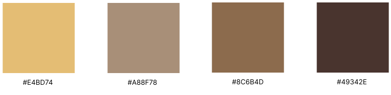

i Wish Cafe
愛薇思精品咖啡館
Design Process
Logo Variation
Color Palette

Our cafe's logo is perfectly displayed on the signboard, blending seamlessly with the design and environment. It showcases the elegance and prominence of the brand, ensuring a strong visual presence.
Our cafe's logo is beautifully showcased on this takeaway cup mockup, ensuring that every sip taken reflects our brand's unique identity. This design demonstrates how the logo perfectly integrates with the cup's surface, offering a professional and stylish look.
Our cafe's logo is prominently featured in this business card mockup, providing a perfect representation of our brand identity. The design showcases how the logo aligns with the card's layout, offering a professional and cohesive look.
This mockup presents our cafe's logo in an elegant and refined manner on a mug. The design emphasizes how the logo fits seamlessly with the mug's surface, giving it a polished and sophisticated look.